01 · Terraria mod · 2026
Wizarding World
A Harry Potter adventure for Terraria. You start as a Hogwarts student with a first wand and follow a guided route through 12 boss fights and a Horcrux hunt to Lord Voldemort, the true final boss, then claim the Deathly Hallows in a short epilogue.
- Role
- Project lead for the 1.0 release: QA, release checks, visual overhaul
- Status
- 1.0 release candidate, July 2026
- Platform
- Terraria via tModLoader 1.4.4, .NET 8
- Built with
- C#, Python tooling, GitHub Actions; Claude Code and AI image generation
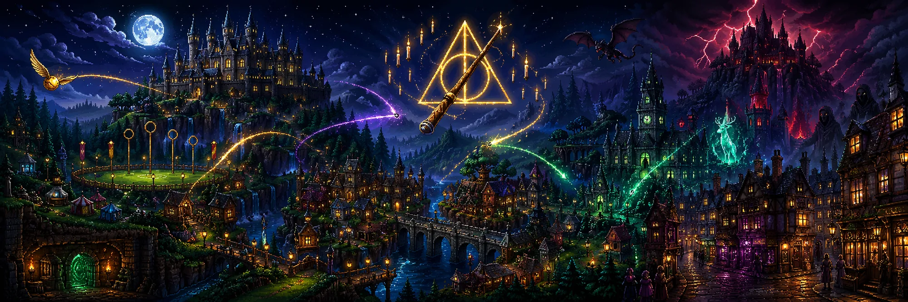
What it is
Terraria is a 2D sandbox game with a large modding community. Wizarding World adds a complete Harry Potter progression on top of it. The framing device is a Pensieve: you relive memories from across wizarding history, which explains why a first-year can meet the Basilisk, Aragog and the Battle of Hogwarts in one playthrough, and lets you replay any boss.
Around the bosses sit the systems that make it feel like the books: wand lore with 18 woods, 5 cores and 9 spell schools; a Dark Arts corruption meter that makes dark magic tempting but costly; class quests for Defense Against the Dark Arts, Potions, Creatures and Charms; Quidditch seasons with Seeker ranks; Hogsmeade with the Shrieking Shack; and a three-zone Forbidden Forest that gets more dangerous the deeper you go.
The boss route
The main route follows Terraria’s own progression, so each fight lands at a sensible point in the vanilla game:
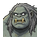
Mountain Troll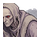
Quirrell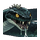
Basilisk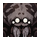
Aragog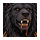
Fluffy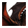
Horntail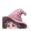
Umbridge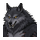
Fenrir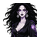
Bellatrix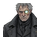
Barty Crouch Jr.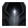
Dementor King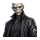
Lord Voldemort
Before the final battle you destroy four Horcruxes and hunt down Nagini to weaken Voldemort. After him comes a short Deathly Hallows epilogue: claim the true Invisibility Cloak from Dumbledore, purify Gaunt’s Ring into the Resurrection Stone, and equip all three Hallows to become Master of Death. Two in-game items, a Boss Compass and a Wizard’s Almanac, tell players where to go next so nobody gets stuck.
The world
Custom scene backgrounds set the mood for each area, with layered skies behind the play field.
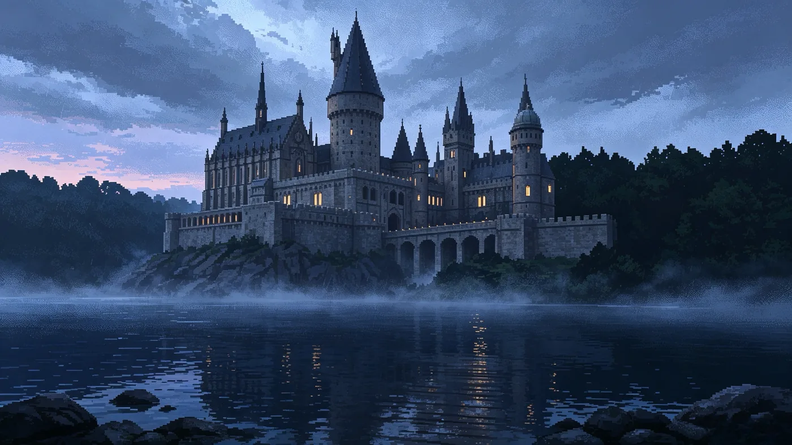
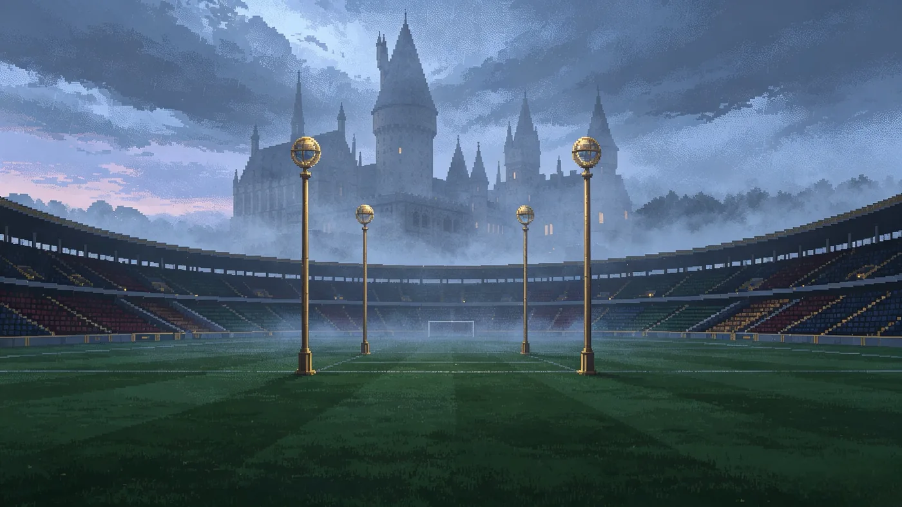
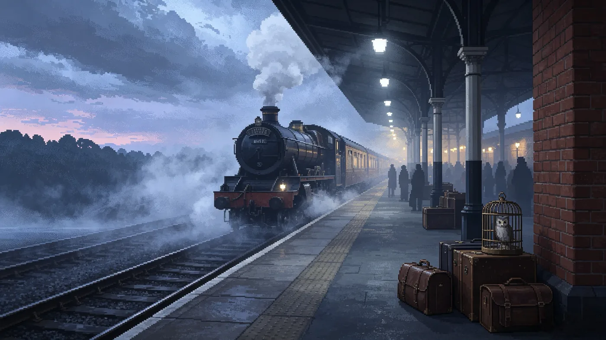
Getting it release-ready
A mod this size (593 C# files, 606 sprites) breaks in quiet ways: a missing sprite, an untranslated line, a boss flag that doesn’t survive a save. Most of the late work went into making that visible and testable:
- Route-by-route smoke tests. The main route, from the Hogwarts letter to the Hallows ending, was tested in tModLoader in ten stages, each written up as a QA record in the repository, including what was not verified. The tests used debug shortcuts such as god mode and item kits, so boss balance is still open.
- Save and reload checks. Key boss and story flags were confirmed to persist after Save & Exit.
- Automated checks. Python scripts count the content straight from the source files and check the player guide against it (665 checks, run in GitHub Actions whenever the content changes); a separate script checks every sprite.
- A clean release build. Debug commands and a QA-only test wand are compiled out of public builds, and the release build compiles with zero warnings.
- Three languages. English, Simplified Chinese and Traditional Chinese; native-speaker proofreading is still to do.
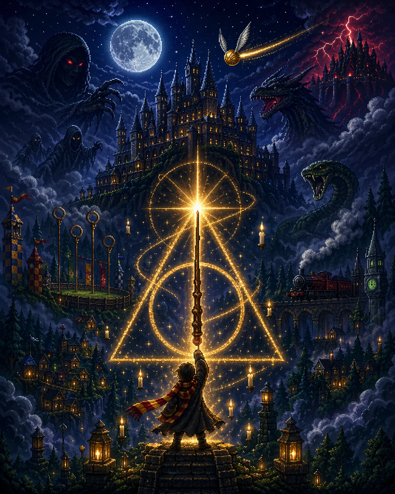
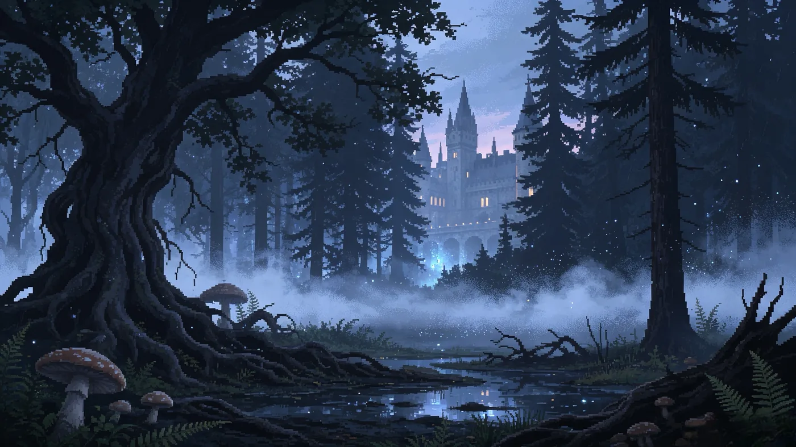
How it was built
The mod was built with AI tools, and the repository says so: the C# was written with Claude Code, and the sprites were generated from written prompts that are kept in the repo. Xinyue (Lily) Feng took it to release between June and July 2026: her commits add the route-by-route QA records, the release checks and packaging, and the overhaul of the scene backgrounds.
The repository is public and open to collaborators. The remaining work is the kind a single maintainer can’t do alone: multiplayer sync checks, longer balance runs, testing on fresh machines and native-speaker proofreading.
An unofficial, non-commercial fan project. Harry Potter and all related names and characters are trademarks of Warner Bros. Entertainment Inc., J.K. Rowling and other rights holders. Terraria is © Re-Logic. The mod is not affiliated with or endorsed by any of them.